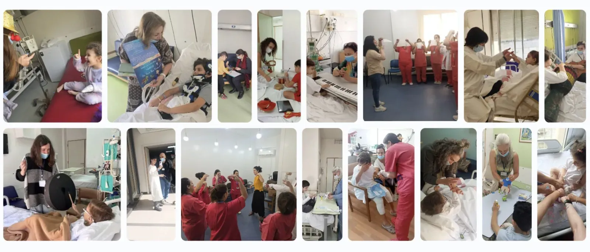
Our story
2021
Cocoon 4 Us, a social enterprise, is born amid Lebanon’s crises, Covid-19 and the Beirut port explosion.
2024
In July, its paramedical program, the POSITIVE project, is launched in oncology and hematology at Saint George Hospital University Medical Center, thanks to the support of the ALAM Suisse association.
2025
The program extends to four major university hospitals in Beirut: Saint George Hospital University Medical Center, Hôtel-Dieu de France, LAU Medical Center–Rizk Hospital and Lebanese Hospital Geitaoui.
2026
the POSITIVE project becomes a Lebanese NGO, with its Observatory and its Multidisciplinary Scientific Advisory Committee.
Our mission and the challenges we meet
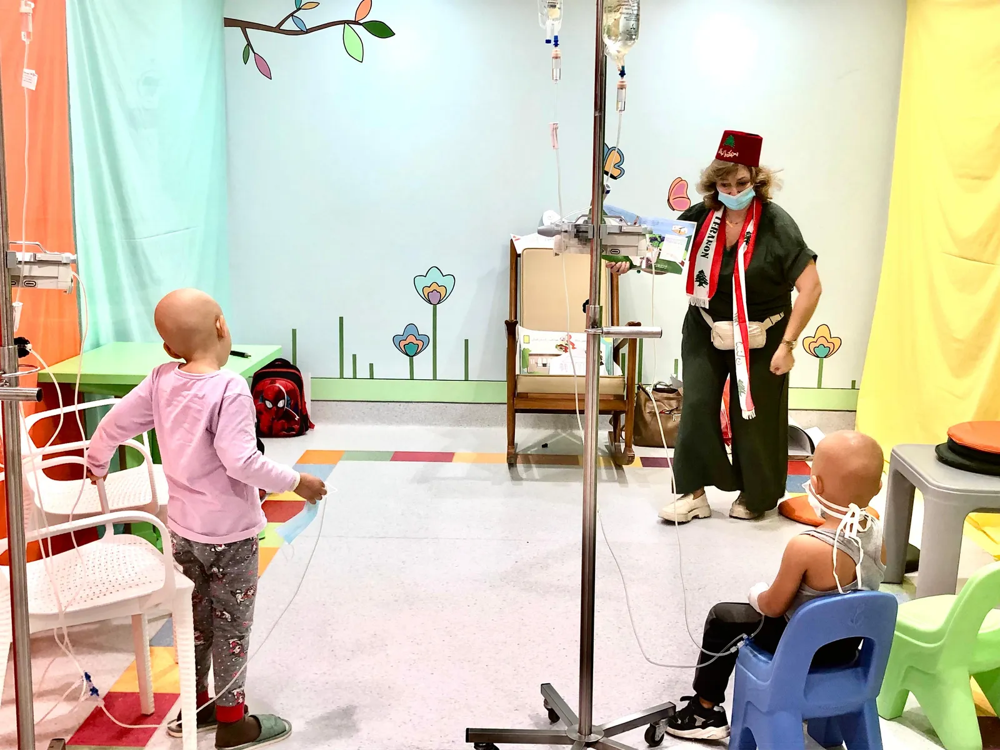
Let us start with what children go through.
In hospital, they are welcomed according to a diagnosis rather than as a whole person, and then assigned a room. Their body is in that room, but their mind is often elsewhere: it is their way of protecting themselves. They find it hard to put words on what they feel, the pain, the fear, and they remain alone with it.
They are also passive: they are cared for, but given little room to act on their own well-being.
And support often comes too late: when distress becomes visible, the moment for prevention has already passed.
Our mission: to find the key to each child’s heart, helping them reconnect body and mind, become the lead of their healing process and, beyond that, of their own life. We work directly with the children, and also with everyone around them: families and medical teams. Because for us, healing is not only medical: it is, above all, deeply human.
A global and child-centred approach
Help young patients reconnect with themselves, regain a sense of autonomy and become more actively engaged in their hospital experience and care journey.
The approach combines:
- emotional and psychosocial support
- sensory and creative experiences
- self-expression and confidence-building
- positive social interaction
- patient engagement and autonomy
- consideration of the family and of the hospital or care center environment
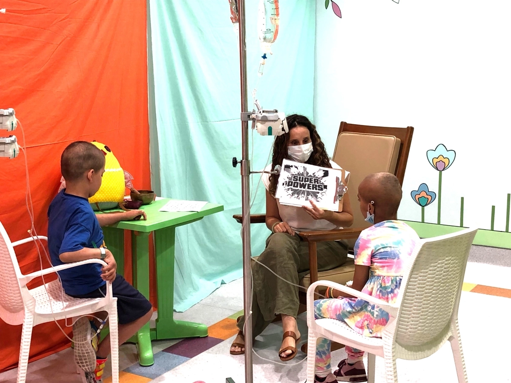
A complementary approach
The POSITIVE project is designed to complement existing medical and psychological care. It provides:
- structured psychosocial interventions
- a safe and supportive space for participation and self-expression
- observation of selected well-being and engagement indicators
- appropriate communication with the hospital or care center team when a concern requiring clinical attention is identified
Participation is voluntary and sessions remain adapted to each patient’s medical situation.
How the program runs
- Dedicated monitors
- Each hospital has its own monitors, who follow every session in real time. Monitoring, structured observation and well-being indicators, in the field.
- A community of experts
- Sessions are led by experts in more than twenty disciplines: art therapy, music, hospital clowns, mindfulness, qi gong, mindful photography, magic, puppet therapy…
- 20-week cycles
- Replicable cycles, with well-being workshops for the care teams every five weeks.
- Our own data system
- We built our own system to manage the data and feed research.
In the field
Sessions in partner hospitals and care centers.
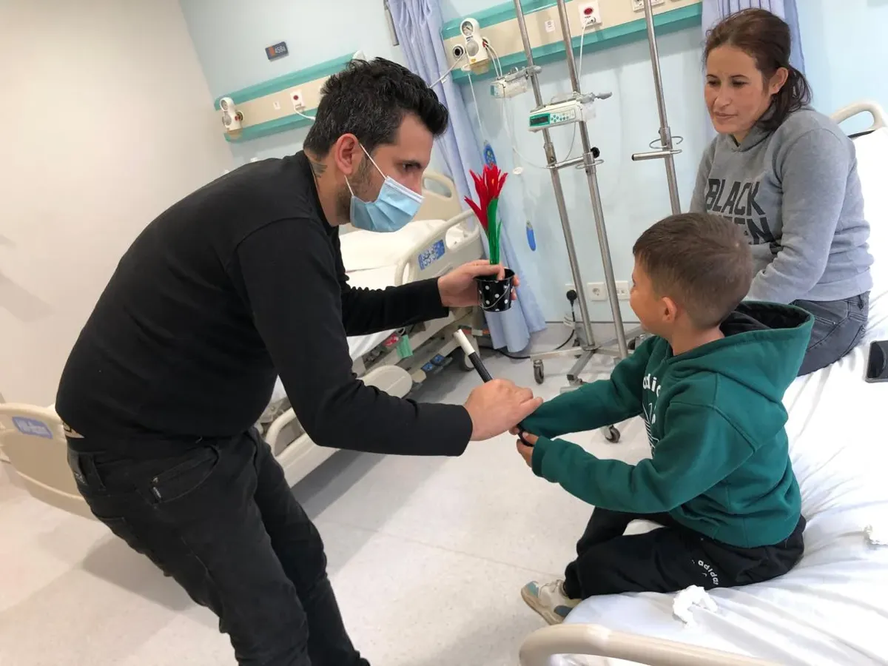
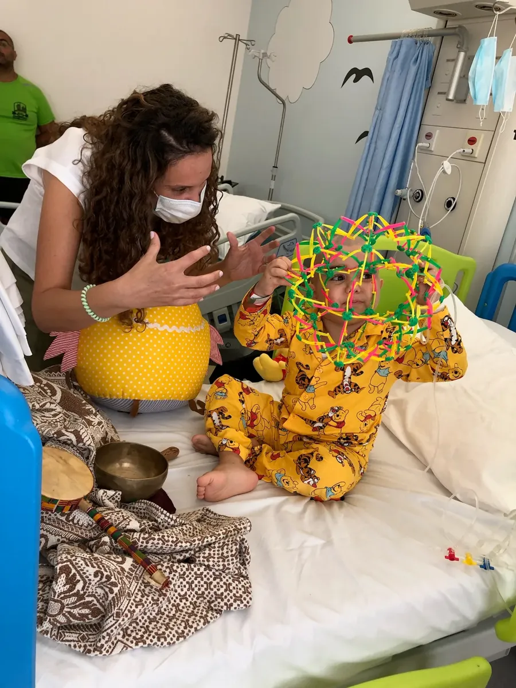
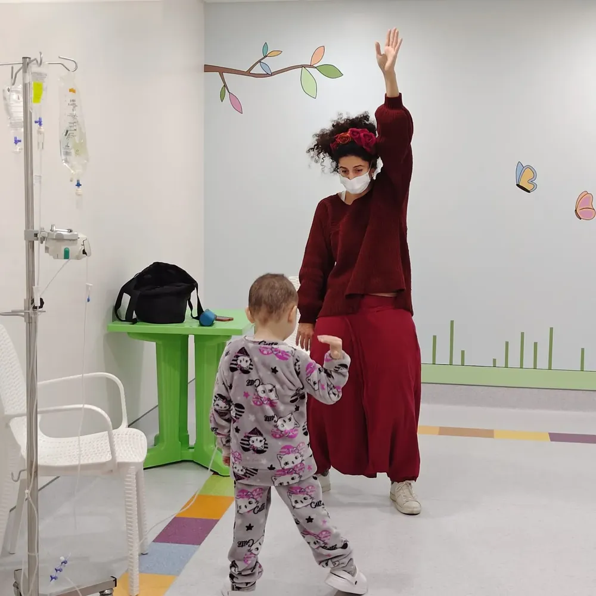
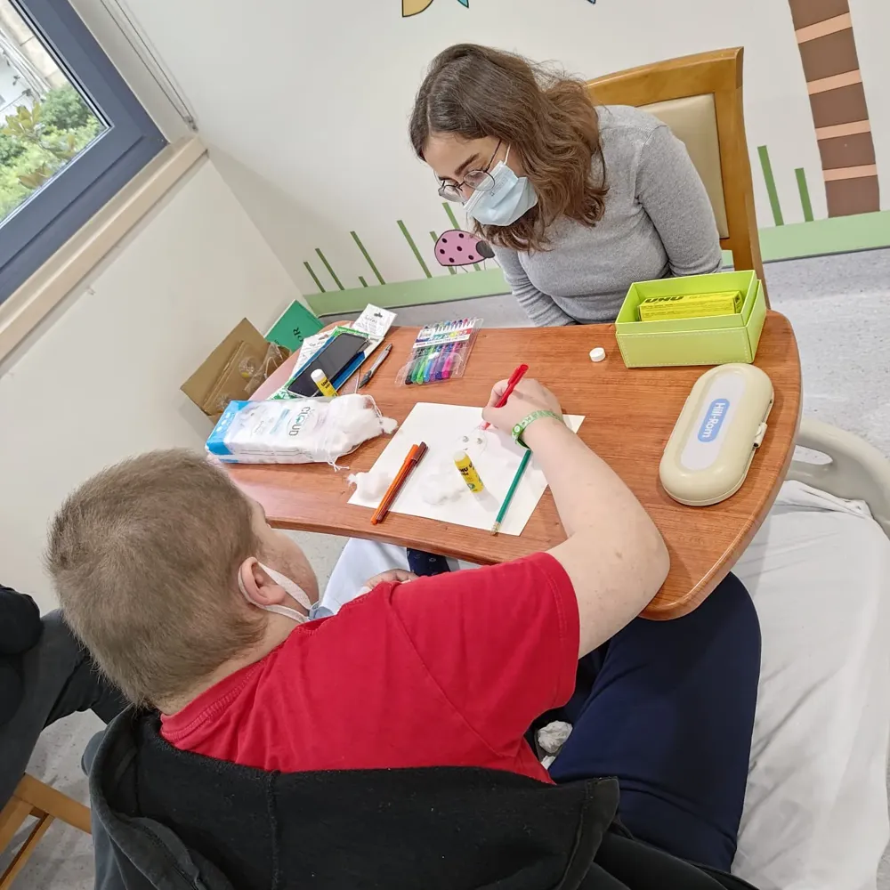
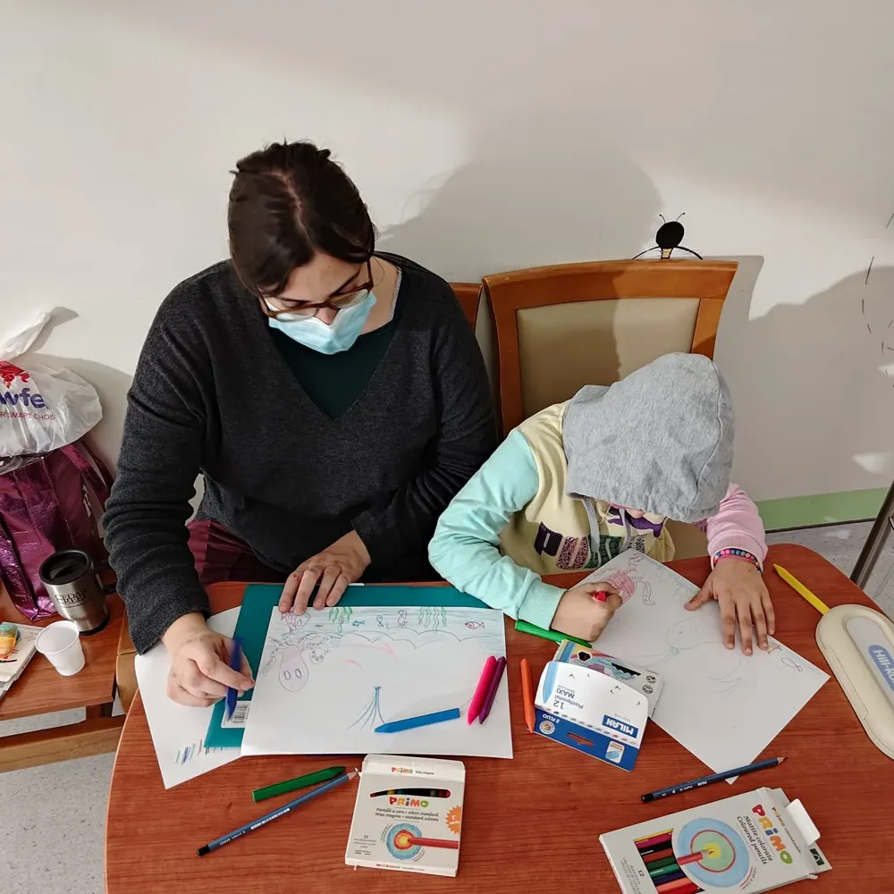
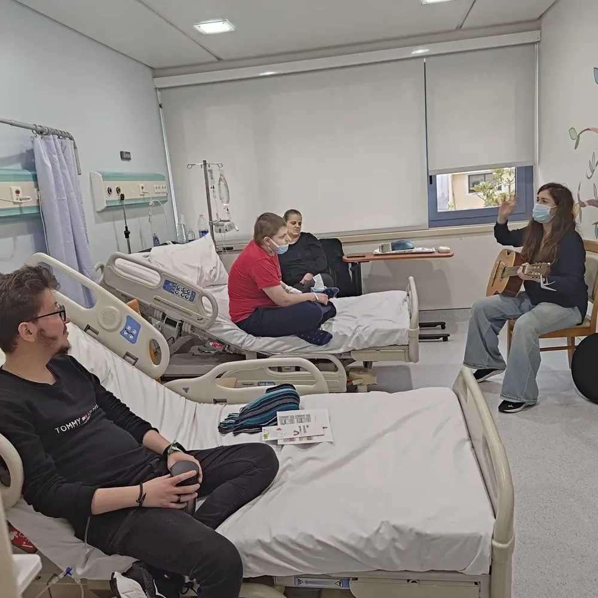
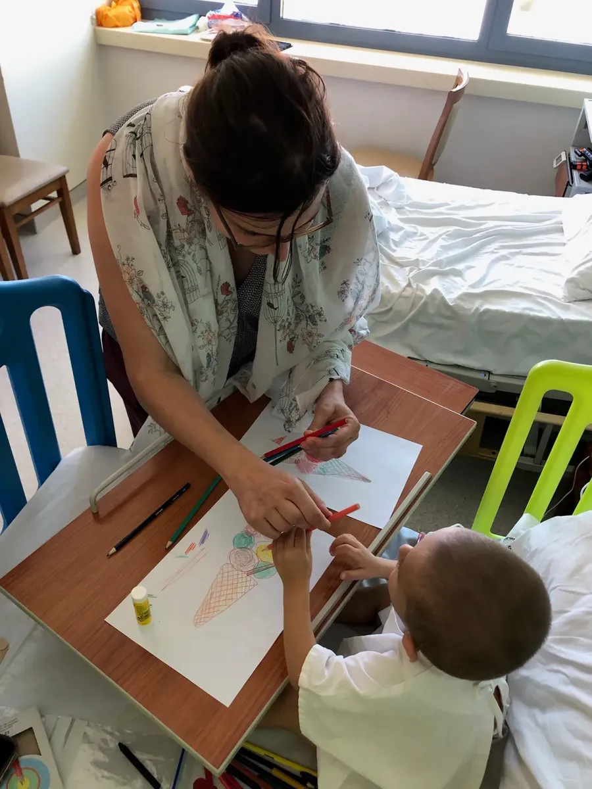
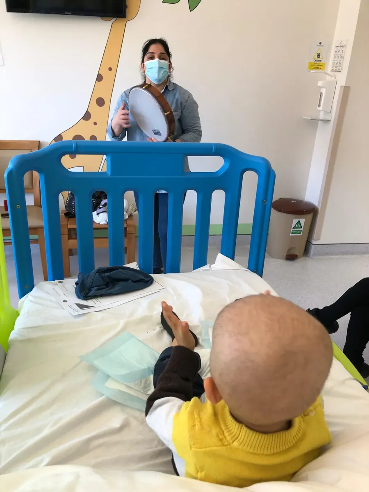
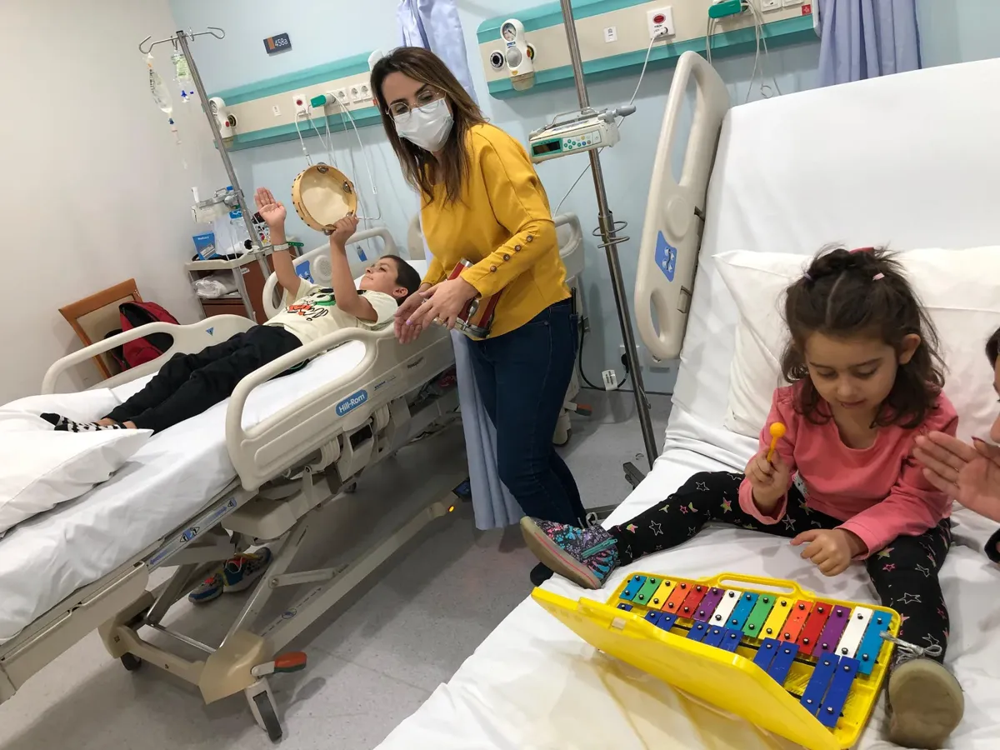
A community with a mission
قلب واحد
Alb Wahad, “one heart”
This project is not just an initiative—it’s a growing network of experts, educators, and families working together to redefine children’s well-being.
Why it matters: The impact extends beyond individual kids—it’s about creating a collective shift in how society supports its youth.
How it’s woven into practice?
Within the movement created by Cocoon 4 Us toward a positive change:
- Partnerships with experts and institutions to ensure wide-reaching, meaningful impact.
- Programs designed not just for individual growth, but for collective transformation—ensuring children influence their families, communities, their country, and even the world.
- A commitment to research and advocacy in children’s mental health, shaping the way society supports its younger generations.
By empowering today’s children, we can help shape a future where well-being is at the center of how we educate, lead, and grow.
A model built to last
To last, we rely on:
- institutional partnerships, which connect existing structures rather than create parallel ones;
- diversified funding, public and private;
- prevention: co-built with the hospitals and care centers;
- a replicable model, which can expand and adapt without losing its quality.
Because for us, prevention is not a cost: it is an investment.
See Our Work in Action
Watch how we bring joy and presence to hospital and care center settings
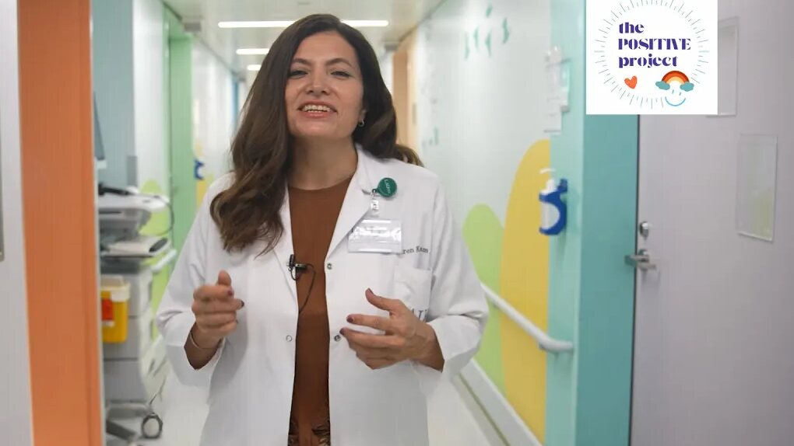
Watch the video on YouTube (opens in a new tab)Testimonials
“I am fully supportive for what you are offering with this amazing project! A project like this should be more exposed to people and social media because what you are offering is something very helpful for the children and the parents. keep on the beautiful work!”
“Je tiens à vous remercier du fond du cœur pour ce projet merveilleux. Ma fille a passé un moment très spécial aujourd’hui. Elle est sortie de la séance le sourire aux lèvres, visiblement plus légère. Ce qui m’a particulièrement touché, c’est que les enfants ont eu l’espace pour parler librement de ce qui les dérange ou les préoccupe. C’est rare et tellement précieux. Merci à toute l’équipe pour cette belle initiative, pleine d’écoute, de douceur et d’humanité.”

Take Action for Children in Hospitals & Care Centers
More engaged young patients today are healthier, more autonomous and more engaged adults tomorrow.